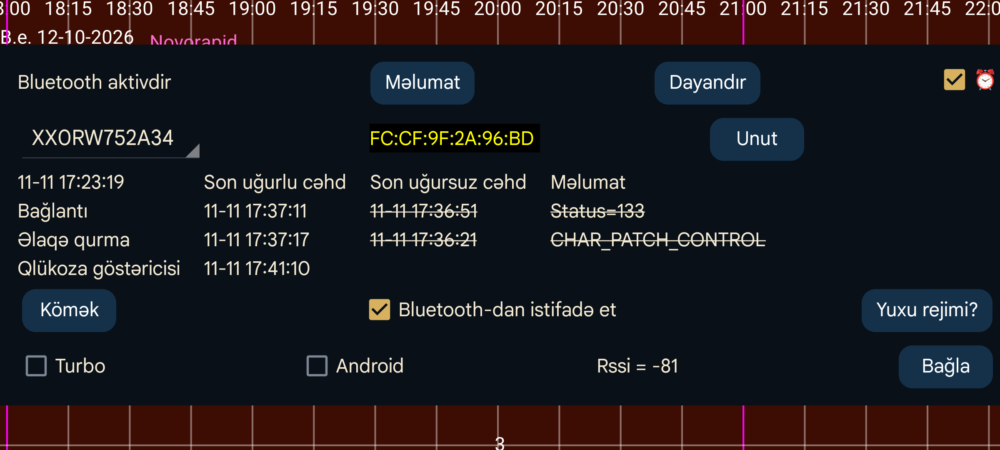

Açılan siyahıda sensorun adı göstərilir. Juggluco eyni vaxtda bir neçə sensordan istifadə edirsə, məlumatına baxmaq istədiyiniz sensoru buradan seçə bilərsiniz.
Yuxu rejimi seçimi Juggluco-nun işləməsinə mane ola bilən batareya optimallaşdırmalarının necə söndürüləcəyini izah edən ekranı açır.
Bluetooth tarixçəsi: Libre 2-də Tarixçə göstəriciləri sensorun 15 dəqiqəlik intervallarla saxladığı əvvəlki ölçmələrdir. Əvvəllər yalnız skan vasitəsilə əldə edilirdilər. Bu seçimi aktiv etsəniz, Tarixçə göstəriciləri Bluetooth vasitəsilə də alınacaq. Bu zaman başqa dəyişikliklər də olur: Juggluco Axın göstəricilərinin orta qiymətlərini deyil, Tarixçə göstəricilərini LibreView-a göndərir. Bu üsul daha yavaşdır və Wear OS saatlarında problem yarada bilər. Seçim Libre 3 və ABŞ/Kanada/Avstraliya/Cənubi Koreya Libre 2 sensorlarına təsir etmir: həmin sensorların Tarixçə göstəriciləri onsuz da Bluetooth vasitəsilə alınır.
Xəta: Bu seçim yalnız Wear OS-də Libre 3 sensoru üçün mövcuddur. Samsung bu xətanı düzəldənədək Galaxy Watch 5 və daha yeni modellərdə onu aktiv etmək lazımdır. Əks halda qlükoza göstəriciləri hər 1 dəqiqə əvəzinə 2 dəqiqədən bir alınır. Samsung Galaxy Watch 5-dən Ultra modelinə qədər olan saatlar Libre 2 göstəricilərini həmişə 2 dəqiqə intervalla alır.
⏰: Dexcom G7 və ONE+ sensorlarına lazımi vaxtda qoşulmaq üçün Juggluco-ya zəngli saat funksiyasından istifadə etməyə icazə verir. Bu seçim olmadan qurğu istifadə edilmədikdə dərin yuxu rejiminə keçib sensora yenidən qoşulmaq üçün vaxtında oyanmaya və qlükoza göstəricisini dərhal almaya bilər. Məndə Wear OS saatında gecələr belə hal baş verib. Sonradan gələn geriyə doldurma məlumatları və yavaş oyanma səbəbindən problem telefon və saat ekranında yox, yalnız jurnal fayllarında görünürdü. Telefonumda bu seçimə ehtiyac yoxdur; aktiv olduqda, deyəsən, daha pis işləyir.
Libre 3 üçün də ⏰ seçimi yenidən qoşulma cəhdlərini gecikdirə bilir, lakin tamamilə başqa səbəbdən və üsulla. Samsung Galaxy Watch 9-da bağlantı itkilərinin azaldığı bildirilir. Məqsəd bağlantı cəhdlərinin sayını azaltmaq idi, amma yaxşılaşmanın səbəbi qurğunun taymerlə oyadılması da ola bilər.
İcazə: Android 12-dən əvvəl Bluetooth qurğularını axtarmaq üçün məkan icazəsi tələb olunurdu. Android 12 və sonrakı versiyalarda Bluetooth qurğuları ilə bütün əlaqələr üçün Yaxınlıqdakı qurğular icazəsi tələb olunur.
Sensorun qurğu ünvanı məlumdursa, sensor identifikatorundan sonra göstərilir. Qırmızı rəng ABŞ tipli sensor deməkdir.
Unut: Juggluco sensorun qurğu ünvanını unudub onu yenidən axtarır. Bəzi sensorlara qoşulmaq üçün bu vacibdir və Juggluco bunu avtomatik edir. Başqa hallarda da lazım ola biləcəyindən bu düymə vasitəsilə əməliyyatı əl ilə başlada bilərsiniz.
Dayandır: Bu sensora Bluetooth vasitəsilə qoşulmağı dayandırır. Sonradan yenidən Axın göstəriciləri almaq istəyirsinizsə, sensoru skan edin və ya onun məlumat ekranında Aktivləşdir düyməsinə basın.
Cütləşməni ləğv et: Linx/Lumiflex/Aidex X sensorları cütləşdirildiyi telefonu və ya saatı yadda saxlayır və başqa qurğularla cütləşməyə icazə vermir. Bu düymə sensora cütləşməni ləğv etmək əmri göndərir; uğurla yerinə yetirilərsə, digər telefon və saatlar da sensora qoşula biləcək. Sensoru sol menyu → Saat → Wear OS tənzimləmələri → Birbaşa sensor bağlantısı vasitəsilə telefonla saat arasında keçirirsinizsə, cütləşmə avtomatik ləğv edilir və bu düyməni ayrıca istifadə etməyin.
Təmizlə: Yalnız Linx/Lumiflex/Aidex X sensorlarında görünür. Bütün qlükoza göstəricilərini sensorun yaddaşından silir və sensoru yeni sensor kimi yenidən başladır. Bu yolla 15 gündən artıq istifadə etmək mümkün olsa da, mənim sınağımda son istifadə tarixindən sonrakı göstəricilər tamamilə etibarsız idi: paralel istifadə etdiyim Libre 3 sensorunun təxminən yarısı qədər nəticə verirdi. Bir neçə həftə sonra ikinci dəfə təmizlədikdə göstəricilər yenidən ciddi şəkildə pisləşdi (mənim halımda çox aşağı idi). Problem istifadənin uzadılmasından deyil, yaddaşın təmizlənməsindən qaynaqlanır kimi görünür.
Təmizləmə zamanı Bluetooth qurğuları dəfələrlə axtarılır. Android müəyyən vaxt ərzində tətbiqin başlada biləcəyi axtarışların sayını məhdudlaşdırır; limit keçildikdə sonrakı sorğular sadəcə rədd edilir. Sayğacı sıfırlamaq üçün Bluetooth-u söndürüb yenidən aktiv etmək olar.
Sıfırla: Yalnız Sibionics 2 üçün. Ötürücüdə sensor dəyişdirilərkən, Juggluco köhnə və/və ya yeni sensora qoşulmuş vəziyyətdə bu düymə basılmalıdır. Ötürücü başqa tətbiq vasitəsilə artıq sıfırlanıbsa, bunu etməyin.
Turbo: Bağlantı xətalarını azaltmaq məqsədilə sensora qoşulma cəhdlərini gücləndirir. Daha çox batareya sərf edə bilər. Mənim sınaqlarıma əsasən FreeStyle Libre 2 ilə Watch 4-də lazım olur, lakin FreeStyle Libre 3 üçün və sınaqdan keçirdiyim smartfonlarda tələb olunmur.
Android: Sensora bağlantını Juggluco əvəzinə Android-in qurmasına imkan verir. Bu seçimi normal halda aktiv etməyin. Əksər hallarda qoşulma daha uzun çəkəcək. Seçim Android 13-ün sonradan düzəldilmiş bir xətasını yan keçmək üçün əlavə edilib. Yalnız Sensor ekranında son cəhdlərin vaxtları göstərilmirsə, yəni heç bir bağlantı və ya sensor xətası görünmədiyi halda göstəricilər alınmırsa və Bluetooth-u söndürüb-aktiv etməklə əlaqə bərpa olunursa, bunu sınayın. Eyni telefonda iki tətbiqi Avropa Libre 2 sensoruna eyni vaxtda qoşmaq da bu vəziyyəti yarada bilər; bu, yalnız həmin sensor variantında mümkündür.
Məlumat: Sensorun başlama və bitmə vaxtını, eləcə də son skan və Axın göstəricilərinin vaxtlarını göstərir.
FreeStyle Libre 2 sensoruna Bluetooth Low Energy (BLE) vasitəsilə qoşulmaq üçün Bluetooth aktiv olmalıdır. Sensor bu tətbiqlə uğurla skan edilənədək heç bir bağlantı qurulmur. Sensor FreeStyle oxuyucusuna və ya smartfonlardakı başqa tətbiqlərə qoşulmamalıdır. Abbott-un LibreLink tətbiqini silmək, deaktiv etmək və ya məcburi dayandırmaq lazımdır. Sensor FreeStyle oxuyucusu ilə başladılıbsa və onu söndürmək mümkün deyilsə, oxuyucunu Faradey qəfəsinə qoyaraq sensorla əlaqəsinin qarşısını ala bilərsiniz.
Bluetooth-dan istifadə et aktiv olmalıdır.
Bütün bu şərtlər yerinə yetirilsə də, Juggluco-nun sensordan qlükoza göstəricisi almasına bəzən xeyli vaxt lazım olur. Çox vaxt bir dəqiqə kifayətdir, lakin daha uzun çəkə bilər. Ən çox çətinlik Bağlantı mərhələsində yaranır. Ən çox rast gəlinən xəta status=133-dür; bu, onConnectionStateChange(BluetoothGatt bluetoothGatt, int status, int newState) çağırışının status parametridir və adətən Bluetooth qurğusunun tapılmadığını bildirir. Çox vaxt sadəcə qurğunun tapılmasını gözləmək lazımdır.
Sensorun başqa qurğuya qoşulması, müvəqqəti nasaz işləməsi, ətrafdakı Bluetooth qurğularının müdaxiləsi və ya Android-in Bluetooth sistemindəki problem də səbəb ola bilər. Bəzən Bluetooth-u söndürüb-aktiv etmək, telefonu yenidən başlatmaq və ya digər qurğuların Bluetooth-unu söndürmək kömək edir. Sensoru təkrar skan etmək də bəzi problemləri həll edir. Su, o cümlədən bədən toxumalarındakı su, siqnalı zəiflədə bilər. Məsələn, Wear OS saatı sensorun əks qolunda taxıldıqda bədən saatla sensor arasında qalırsa, bağlantı problemləri yarana bilər.
Bir Accu-Chek SmartGuide istifadəçisi bildirib ki, Bluetooth axtarışı sensoru tapmayanda Android tənzimləmələrində Qoşulmuş qurğular bölməsinə keçib sensoru seçmək və Unut düyməsinə basmaq problemi həll edib.
Başqa telefonda Bluetooth-dan istifadə aktiv olduğu halda Libre sensorunu Juggluco ilə skan etmək sensorun bağlantısını bu telefondan digərinə keçirəcək. Bağlantını geri qaytarmaq, bəzən arada yenidən skan etməklə, vaxt apara bilər.